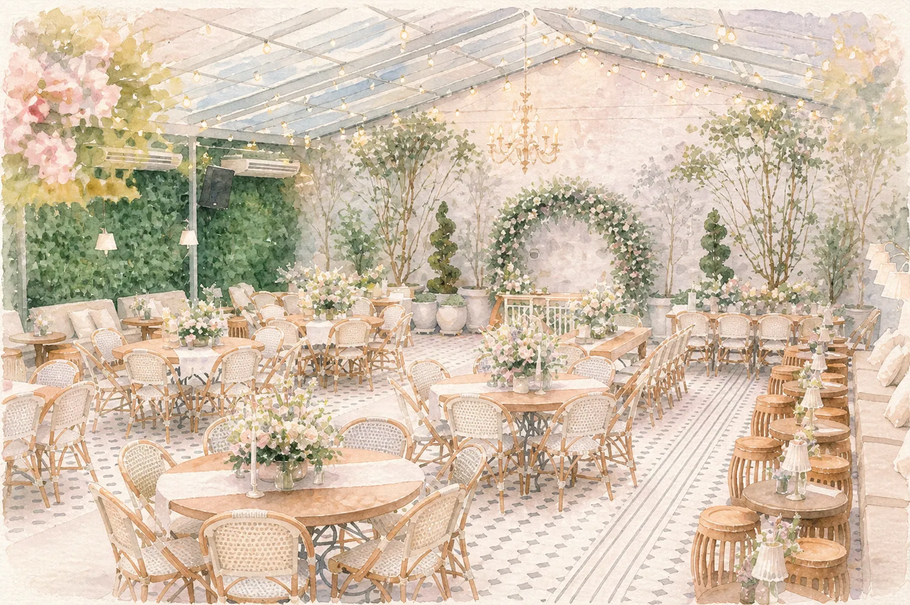

A Casa Quintal
Queríamos um lugar que não fosse apenas um espaço, mas um cenário que fizesse parte da nossa história. Esta casa, com seu estilo de vila italiana, reflete exatamente o que desejamos para o nosso dia: uma celebração íntima, acolhedora e cheia de significado, cercada pelas pessoas que mais amamos.
Avenida Angelica – Consolação
São Paulo – Estado de São Paulo, Brasil